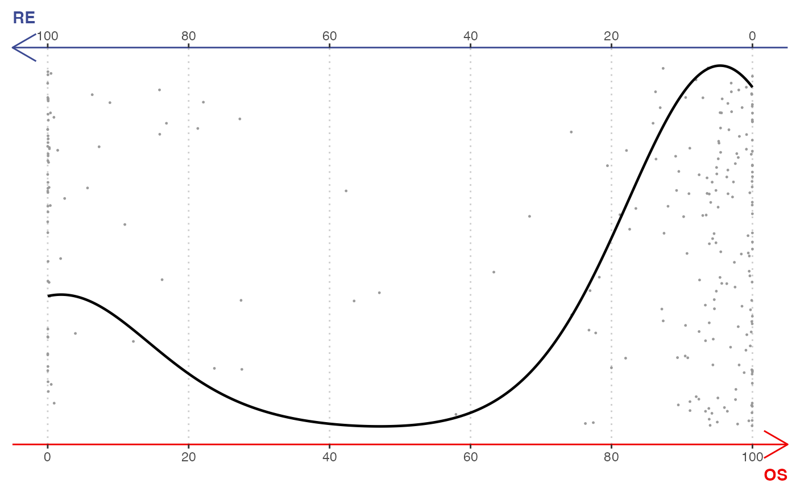
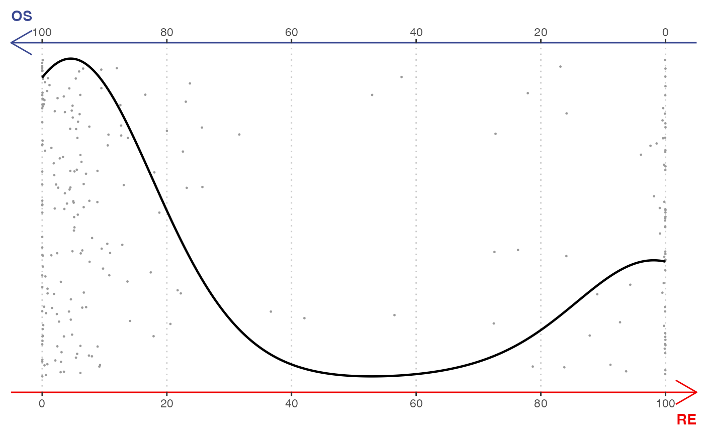
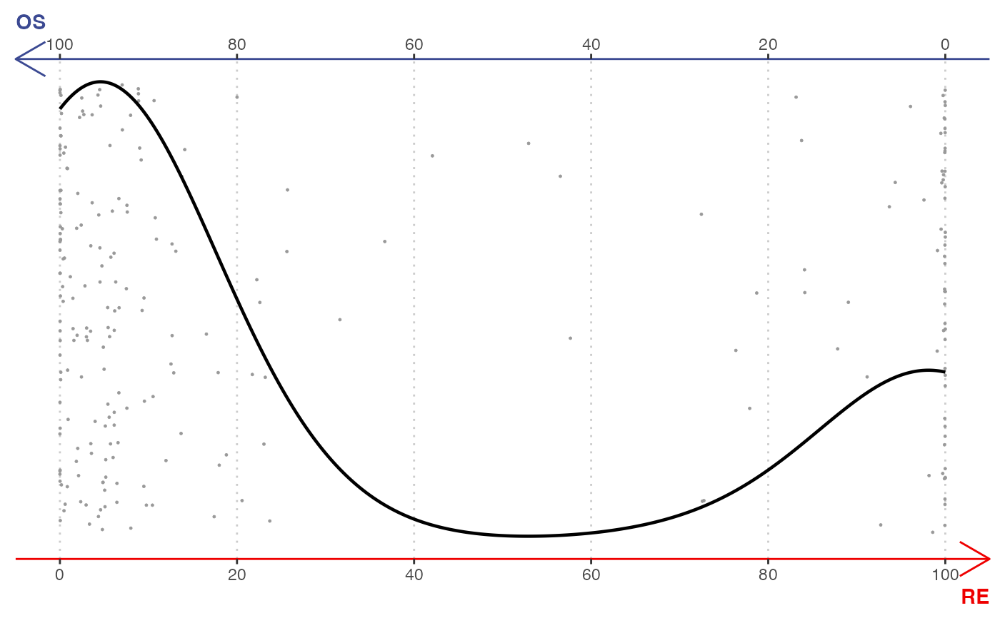

Create binary plots that show similarity between single cells and two selected terminals in a barycentric coordinate. The two vertices are placed at the left and right of a 2D plot where x-axis measures the similarity. Y-axis is jittered for a clear view. A density (histogram) curve is added for indicating the distribution.
See plotTernary manual for more details.
Usage
plotBinary(x, ...)
# Default S3 method
plotBinary(
x,
clusterVar,
vertices,
features = NULL,
byCluster = NULL,
processed = FALSE,
method = c("euclidean", "cosine", "pearson", "spearman"),
force = FALSE,
sigma = 0.08,
scale = TRUE,
dotColor = "grey60",
returnData = FALSE,
...
)
# S3 method for class 'Seurat'
plotBinary(
x,
layer = "counts",
assay = NULL,
clusterVar = NULL,
processed = FALSE,
...
)
# S3 method for class 'SingleCellExperiment'
plotBinary(x, assay.type = "counts", clusterVar = NULL, processed = FALSE, ...)
# S3 method for class 'simMat'
plotBinary(
x,
dotSize = 0.6,
dotColor = "grey60",
densLinewidth = 0.8,
labelColors = c("#3B4992FF", "#EE0000FF"),
title = NULL,
...
)Arguments
- x
Input data. Can be a
matrixordgCMatrixobject with cells as columns, aSeuratorSingleCellExperimentobject. "simMat" method takes intermediate values.- ...
Arguments passed to other methods.
- clusterVar
A vector/factor assigning the cluster variable to each column of the matrix object. For "Seurat" method,
NULL(default) forIdents(x), or a variable name inmeta.dataslot. For "SingleCellExperiment" method,NULL(default) forcolLabels(x), or a variable name incolDataslot.- vertices
Vector of three unique cluster names that will be used for plotting. Or a named list that groups clusters as three terminal vertices. There must not be any overlap between groups.
- features
Valid matrix row subsetting index to select features for similarity calculation. Default
NULLuses all available features.- byCluster
Default
NULLto generate one plot with all cells. Set"all"to split cells in plot by cluster and returns a list of subplots for each cluster as well as the plot including all cells. Otherwise, a vector of cluster names to generate a list of subplots for the specified clusters.- processed
Logical. Whether the input matrix is already processed.
TRUEwill bypass internal preprocessing and input matrix will be directly used for similarity calculation. DefaultFALSEand raw count input is recommended. If missing in call, usingslot = "counts"in "Seurat" method or usingassay.type = "counts"in "SingleCellExperiment" method will force this argument to beFALSEand others forTRUE.- method
Similarity calculation method. Default
"euclidean". Choose from"euclidean","cosine","pearson","spearman".- force
Whether to force calculate the similarity when more then 500 features are detected, which is generally not recommended. Default
FALSE.- sigma
Gaussian kernel parameter that controls the effect of variance. Only effective when using a distance metric (i.e.
methodis"euclidian"or"cosine"). Larger value tighten the dot spreading on figure. Default0.08.- scale
Whether to min-max scale the distance matrix by clusters. Default
TRUE.- returnData
Logical. Whether to return similarity data instead of generating plot. Default
FALSE.- layer
For "Seurat" method, which layer of the assay to be used. Default
"counts".- assay
For "Seurat" method, the specific assay to get data from. Default
NULLto the default assay.- assay.type
For "SingleCellExperiment" methods. Which assay to use for calculating the similarity. Default
"counts".- dotSize, dotColor
Dot aesthetics passed to
geom_point. Default0.6and"grey60".- densLinewidth
Density plot line aesthetic. Default
0.8.- labelColors
Color of the axis lines and vertex labels. Default
c("#3B4992FF", "#EE0000FF")(blue and red).- title
Title text of the plot. Default
NULL.
Value
For 'simMat' method, a ggplot object. For other methods, a ggplot
object when splitCluster = FALSE, or a list of ggplot objects when
splitCluster = TRUE.
Examples
gene <- selectTopFeatures(rnaRaw, rnaCluster, c("RE", "OS"))
#> Selected 30 features for "OS".
#> Selected 30 features for "RE".
plotBinary(rnaRaw, rnaCluster, c("RE", "OS"), gene)

# \donttest{
# Seurat example
library(Seurat)
srt <- CreateSeuratObject(rnaRaw)
#> Warning: Feature names cannot have underscores ('_'), replacing with dashes ('-')
Idents(srt) <- rnaCluster
gene <- selectTopFeatures(srt, vertices = c("OS", "RE"))
#> Selected 30 features for "OS".
#> Selected 30 features for "RE".
plotBinary(srt, features = gene, vertices = c("OS", "RE"))

# }
# \donttest{
# SingleCellExperiment example
library(SingleCellExperiment)
sce <- SingleCellExperiment(assays = list(counts = rnaRaw))
colLabels(sce) <- rnaCluster
gene <- selectTopFeatures(sce, vertices = c("OS", "RE"))
#> Selected 30 features for "OS".
#> Selected 30 features for "RE".
plotBinary(sce, features = gene, vertices = c("OS", "RE"))

# }